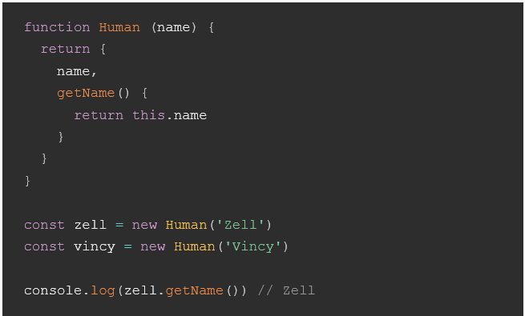
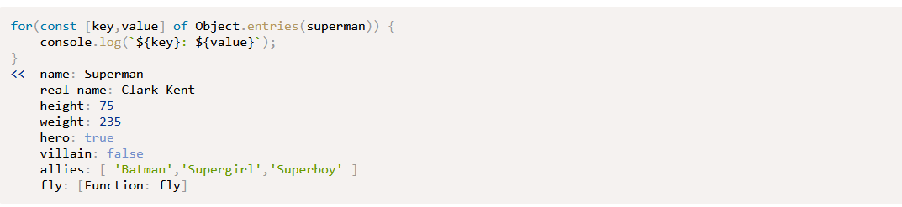

Coding practice
Notes from JAVASCRIPT IN THE INDUSTRY (additional source I found)
Imperative vs. declarative
- Imperative programming focuses on how you want something done. We alter the state of our program step by step.
- Declarative programming focuses on What the end result will be. How to obtain that result is less interesting, as long as the process of obtaining it does not alter the state of our program..
- When a function carries out a task in a deterministic way without changing its environment (changing state in its surroundings), it is called pure.
Example of an imperative style
There are few problems with this example
- The function multiplyAll does not have a return value. Since it's not returning anything, it's not pure.
-
The original
listOfNumbers array gets mutated. The function alters of the input given as an argument, which means it's not immutable.

Example of an declarative style
- The function map has a return value. It doesn't change its surroundings and will return the same result every time, so map method is pure.
-
The original
listOfNumbers stays untouched. Map will create a new copy of the array for us, then alter it. Hence, it is pure.
Things to be aware of
-
Be careful with
push, shift, unshift, pop, reverse, splice, sort, and fill because those methods alter an ordinal array. Meaning, if we use them, our code becomes am imperative style. Hence, it's not pure.
Notes from the article "This in JavaScript"
So, what is "this"?
There are six different ways where
this can take on new values.
thisin global contextthisin object constructionthisin an object methodthisin a simple functionthisin an arrow functionthisin an even listener
This in a Global context
When
this is called outside of any function, this defaults to the
Window object in the browser. Usually, we wouldn't use this in a
gloabl context.
This in object construction
when we create a new instance of an object with the new keyword, this refers to
the instance.

This in a Object method
Since this refers to the object, we can use methods to get the instance of an
object, like below.

This in a Simple function
We need to create a variable that stores the reference to the this. This
variable is often called self or that.
This in am arrow function
this in an arrow function is always the same as this around it (in its immediate
scope.)
With arrow functions, the speakLeet example could be written in the following way:
With arrow functions, the speakLeet example could be written in the following way:
This in Event Listeners
this is set to the element that fired the event in an event listener:
Novice to Ninja Ch.5: Functions
- In order to access a value, use "."notation or "["key"]". obj.key or obj["key"] for example is to access a value of a key inside of an object "obj".
- Use "in" operator or hasOwnProperty() method. For example, "city" in place or place.hasOwnProperty("city").
-
for in loop is used to loop through all of an object's properties and methods.
To make sure that only an object’s own properties are returned, a quick check
can be implemented beforehand:
- The Object.keys() method will return an array of all the keys of any object that is provided as an argument. We can then iterate over this array to access all the keys of an object:
- ES2017 also adds some the Object.values() that works in the same way, but returns an array of all the object's value:
-
Object.entries() is also part of ES2017 and returns an array of key-value
pairs. These key-value pairs are returned in arrays, but they can be
destructured and accessed individually using the following notation:

- Any property can be removed from an object using the delete operator.
-
It’s even possible for an object to contain other objects. These are known as
nested objects. Here’s an example of an object that contains a list of other
objects. It has been assigned to the variable jla :
- An object literal can be passed as a parameter to a function. This is useful when there are a large number of parameters, as it allows the arguments to be provided by name and in any order.
JSON
Three major differences between Object and JSON
- Property names must be double-quoted
- Permitted values are double-quoted strings, numbers, true, false, null, arrays and objects
- Functions are not permitted values
The Math Object
- The Math.abs() method returns the absolute value of a number. So if the number is positive, it will remain the same, and if it’s negative, it will become positive
- The Math.ceil() method will round a numberupto the next integer, or remain the same if it is already an integer
- The Math.floor() method will round a numberdownto the next integer, or remain the same if it is already an integer:
- The Math.round() method will round a number to thenearestinteger:
- ES6 also introduced the Math.trunc() method that returns the integer-part of a number – that is, it gets truncated at the decimal point
- The Math.exp() method will raise a number to the power of Euler’s constant:
- The Math.cbrt() method was introduced in ES6, which returns the cube root of numbers:
- The Math.hypot() method was also introduced in ES6. It returns the square root of the sum of the squares of all its arguments. This can be used to calculate the hypotenuse of a right-angled triangle
- The Math.log() method returns the natural logarithm of a number.Logarithms in base 2 and 10 were added in ES6:
- Whenever you perform any calculations, make sure your program doesn’t rely on exact answers, and has some degree of tolerance instead. If you find you need more precision, you could consider usingdecimal.js library.
The Date Object: Getter and Setter methods
- The getDay() and getUTCDay() methods are used to find the day of the week that the date object falls on. It returns a number, starting at 0 for Sunday, up to 6 for Saturday
- The getDate() and getUTCDate() methods return the day of the month for the date object (note that these values start counting from 1, not 0, so they return the actual day of the month)
- The getMonth() and getUTCMonth() methods can be used to find the month of the date object. It returns an integer, but remember to count from 0; so January is 0, February is 1, and so on up to December being 11
- The getFullYear() and getUTCFullYear() methods return the year of the date object. There is also a getYear() method, but it isn’t Y2K compliant, so shouldn’t be used
- There are also getHours() , getUTCHours() , getMinutes() , getUTCMinutes() , getSeconds() , getUTCSeconds , getMilliseconds() , and getUTCMilliseconds() methods that will return the hours, minutes, seconds and milliseconds since midnight
-
The getTime() method returns a timestamp representing the number of
milliseconds since the Epoch.
This can be useful for incrementing dates by a set amount of time. For example, a day can be represented by 1000 * 60 * 60 * 24 milliseconds: - Most of the getter methods covered in the previous section have equivalentsettermethods. These are methods that can be used to change the value of the date held in a Date object. Each of the methods takes an argument representing the value to which you update the date. The methods return the timestamp of the updated date object.
Regular Expression properties
- The global property makes the pattern return all matches. By default, the pattern only looks for the first occurrence of a match. "g sets the global property to true"
- The ignoreCase property makes the pattern case-insensitive. By default, they are case sensitive. "i sets the ignoreCase property to true"
- The multiline property makes the pattern multiline. By default, a pattern will stop at the end of a line. "m sets the multiline property to true"
Ch.6 The Document Object Model (DOM)
- All nodes have a numerical code to signify what type they are.
- Code: 1 => element
- Code: 2 => attribute
- Code: 3 => text
- Code: 8 => comment
- Code: 9 => body
-
To convert node lists to an array, use either Array.from() method or use the
spread operator:
const imageArray = [...document.images] -
The querySelector() method can be called on any element, rather than just
document:
const wonderWoman = document.querySelector('li:last-child');const ul = document.querySelector('ul#roster'); - Note that the childNodes property returns all the nodes that are children of an element. This will include any text nodes, and since whitespace is treated as a text node, there will often be empty text nodes in this collection.
- The children property only returns any element nodes that are children of that node, so will ignore any text nodes.
- The parentNode property returns the parent node of an element.
- The nextSibling property returns the next adjacent node of the same parent.
- The previousSibling property returns the previous adjacent node.
- Once again, these methods find the next and previous node, not element, so they will often return a blank text node,
- The getAttribute() method returns the value of the attribute provided as an argument:
- If an element does not have an attribute, the setAttribute method can be used to add it to the element.
-
A className property allows the class of an element to be set directly.
wonderWoman.className >> "villain
wonderWoman.className = "hero >> "hero" - Changing the className property of an element by assignment will overwrite all other classes that have already been set on the element. This problem can be avoided by using the classList property instead.
- li The insertBefore() method will place a new element before another element in the markup. It’s important to note that this method is called on the parent node. It takes two parameters: the first is the new node to be added, and the second is the node that you want it to go before
- The replaceChild() method can be used to replace one node with another.
- Every element node has a style property. This can be used to dynamically modify the presentation of any element on a web page.